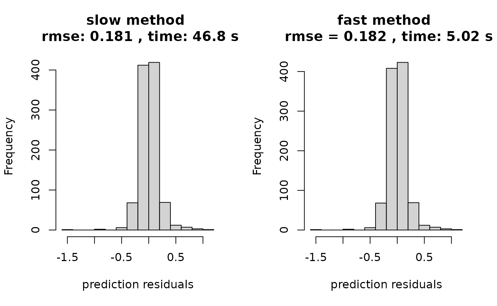

sampsize = 1000
d = 8
x = matrix(runif(sampsize*d),ncol=d)
y = obtest_borehole8d(x)
xtest = matrix(runif(1000*d),ncol=d) #prediction points
ytest = obtest_borehole8d(xtest)
om = new(outermod)
setcovfs(om, rep("mat25",8))
knotlist = list();
for(k in 1:d) knotlist[[k]] = seq(0.01,1,by=0.025)
setknot(om, knotlist) #40 knot point for each dim
p = 200
terms = om$selectterms(p)
loglik_slow = new(loglik_std, om, terms, y, x)
logpr_slow = new(logpr_gauss, om, terms)
logpdf_slow = new(lpdfvec, loglik_slow, logpr_slow)
logpdf_slow$domarg = T
logpdf_slow$optnewton()
loglik_fast = new(loglik_gauss, om, terms, y, x)
logpr_fast = new(logpr_gauss, om, terms)
logpdf_fast = new(lpdfvec, loglik_fast, logpr_fast)
logpdf_fast$domarg = T
logpdf_fast$optcg(0.001, 100)
logpdf_fast$setnthreads(4)
loglik_slow$val
#> [1] -5146.885
loglik_fast$val
#> [1] -5146.885
logpr_slow$val
#> [1] 969.4805
logpr_fast$val
#> [1] 969.4806
logpdf_slow$val
#> [1] -5234.615
logpdf_fast$val
#> [1] -5234.616
hyp0_slow = list(para = getpara(logpdf_fast), hyp = gethyp(om))
hyp0_fast = list(para = getpara(logpdf_fast), hyp = gethyp(om))
ptm = proc.time()
opth = BFGS_lpdf(om, logpdf_slow, verbose = 1, newt= T)
#> [1] "doing opt..."
#> [1] 4878.156
#> [1] 4700.818
#> [1] 4528.294
#> [1] 4368.803
#> [1] 4267.523
#> [1] 4221.44
#> [1] 4190.007
#> [1] 4158.693
#> [1] 4121.586
#> [1] 4074.411
#> [1] 4015.482
#> [1] 3950.515
#> [1] 3891.985
#> [1] 3841.422
#> [1] 3787.869
#> [1] 3716.564
#> [1] 3602.879
#> [1] 3378.977
#> [1] 2893.886
#> [1] 2836.287
#> [1] 2792.305
#> [1] 2707.625
#> [1] 2560.906
#> [1] 2437.647
#> [1] 2359.227
#> [1] 2179.93
#> [1] 1952.374
#> [1] 314.4643
#> [1] 41.21323
#> [1] 31.18063
#> [1] -18.72729
#> [1] -48.07181
#> [1] -86.91484
#> [1] -172.0338
#> [1] -225.0243
#> [1] -255.7692
#> [1] -280.5757
#> [1] -304.5325
#> [1] -326.1237
#> [1] -343.4172
#> [1] -365.3114
#> [1] -397.1682
#> [1] -423.1168
#> [1] -447.9279
#> [1] -468.0183
#> [1] -487.8897
#> [1] -506.0858
#> [1] -523.1492
#> [1] -538.8876
#> [1] -553.0617
#> [1] -565.1129
#> [1] -575.01
#> [1] -583.3287
#> [1] -591.043
#> [1] -599.0394
#> [1] -607.748
#> [1] -616.6261
#> [1] -624.0641
#> [1] -629.1332
#> [1] -632.7088
#> [1] -635.9391
#> [1] -639.388
#> [1] -642.9163
#> [1] -646.1351
#> [1] -648.9487
#> [1] -651.4758
#> [1] -653.7805
#> [1] -655.9564
#> [1] -658.0721
#> [1] -660.0134
#> [1] -661.564
#> [1] -664.827
#> [1] -667.2622
#> [1] -668.7333
#> [1] "finished opt..."
t_slow = proc.time() - ptm
print(t_slow)
#> user system elapsed
#> 42.526 0.020 39.867
pred_slow = new(predictor,loglik_slow)
pred_slow$update(xtest)
yhat_slow = as.vector(pred_slow$mean())
ptm = proc.time()
ptm <- proc.time()
opth = BFGS_lpdf(rho=hyp0_fast, verbose = 1,
om, logpdf_fast, F)
#> [1] "doing opt..."
#> [1] 4878.156
#> [1] 4700.819
#> [1] 4528.295
#> [1] 4368.806
#> [1] 4267.527
#> [1] 4221.443
#> [1] 4190.011
#> [1] 4158.698
#> [1] 4121.595
#> [1] 4074.425
#> [1] 4015.505
#> [1] 3950.554
#> [1] 3892.04
#> [1] 3841.482
#> [1] 3787.928
#> [1] 3716.619
#> [1] 3602.924
#> [1] 3379.112
#> [1] 2896.319
#> [1] 2838.135
#> [1] 2794.393
#> [1] 2699.111
#> [1] 2580.918
#> [1] 2444.09
#> [1] 2265.383
#> [1] 2160.166
#> [1] 1971.785
#> [1] 1212.908
#> [1] 332.5218
#> [1] 223.4323
#> [1] 184.0178
#> [1] 141.1847
#> [1] 72.23379
#> [1] 17.98892
#> [1] -26.00849
#> [1] -66.52261
#> [1] -105.7422
#> [1] -146.4037
#> [1] -192.6252
#> [1] -248.7156
#> [1] -308.1701
#> [1] -343.1461
#> [1] -367.1141
#> [1] -401.7705
#> [1] -431.8421
#> [1] -442.1612
#> [1] -462.5221
#> [1] -480.4421
#> [1] -509.9141
#> [1] -543.3845
#> [1] -575.4975
#> [1] -592.5821
#> [1] -603.1258
#> [1] -612.1577
#> [1] -619.8603
#> [1] -626.2562
#> [1] -631.7729
#> [1] -636.753
#> [1] -640.9816
#> [1] -644.1972
#> [1] -646.7154
#> [1] -649.1558
#> [1] -651.929
#> [1] -654.7995
#> [1] -657.0912
#> [1] -658.4915
#> [1] -658.6163
#> [1] -660.333
#> [1] "finished opt..."
t_fast = proc.time() - ptm
pred_fast = new(predictor,loglik_fast)
pred_fast$update(xtest)
yhat_fast = as.vector(pred_fast$mean())Comparison of results
par(mfrow=c(1,2))
rmse_slow = sqrt(mean((ytest-yhat_slow)^2))
hist((ytest-yhat_slow), main=paste("slow method \n rmse:",
round(rmse_slow,3),
", time:",
round(t_slow[3],2),'s'),
xlab = "prediction residuals")
rmse_fast = sqrt(mean((ytest-yhat_fast)^2))
hist((ytest-yhat_fast), main=paste("fast method \n rmse =",
round(rmse_fast,3),
", time:",
round(t_fast[3],2),'s'),
xlab = "prediction residuals")